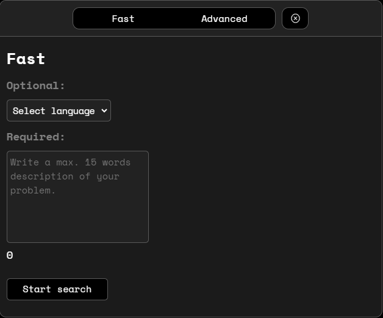

Welcome to Codelink Browser
Shortcuts
| Toggle Bookmarks | |
| Open in main browser | |
Close windows  |
|
| Reload page |
Bug assistant

The key feature of this browser is the bug assistant.
It helps you research bug fixes faster.
You can check it out using the icon.